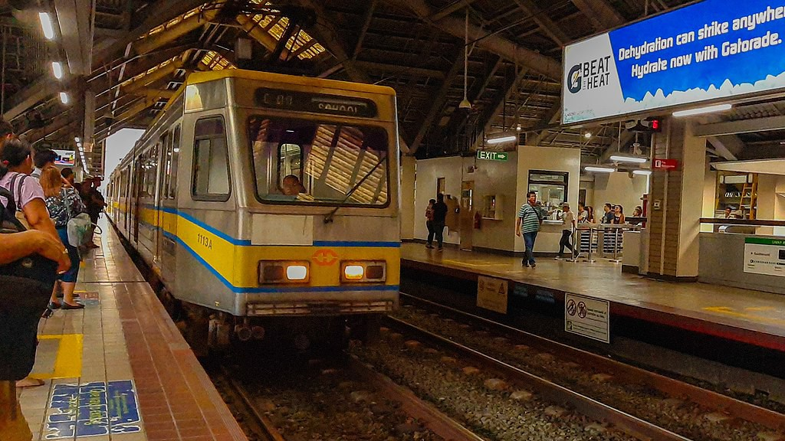
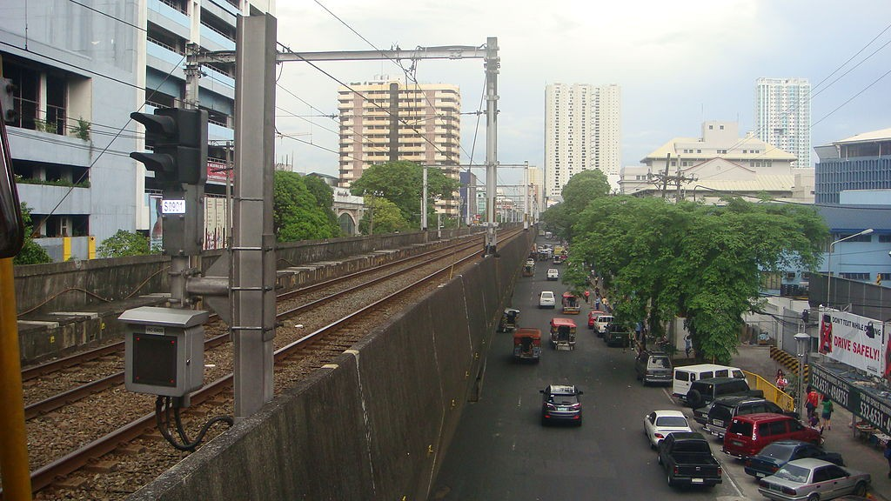
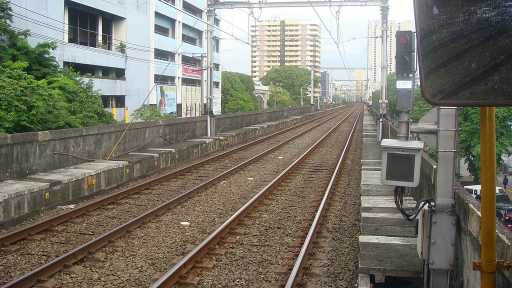
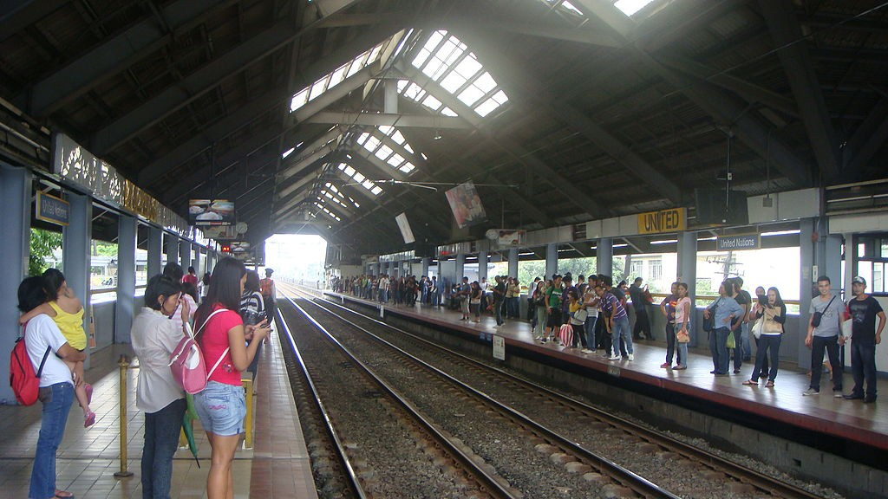

United Nations
LRT-1 station
United Nations station (also known as U.N. Avenue station) is an elevated Manila Light Rail Transit (LRT) station on Line 1. The station serves Ermita in Manila, and is located above the intersection of Taft and United Nations Avenues. The station is named after United Nations Avenue, which in turn is named after the United Nations organization.
United Nations station is also near educational institutions such as the Technological University of the Philippines, the Philippine Normal University, Adamson University, Santa Isabel College Manila, Emilio Aguinaldo College, Araullo High School and Manila Science High School. It is convenient to several tourist destinations including Rizal Park, the National Museum of Fine Arts, the National Museum of Anthropology, and the National Museum of Natural History. It is also adjacent to the World Health Organization Western Pacific Region office and National Bureau of Investigation headquarters. It is also near public squares such as Plaza Salamanca and Plaza Rueda, as well as Paco Park.
United Nations station is the seventh stop from Baclaran and the twelfth from Fernando Poe Jr.
| United Nations | |||||||
|---|---|---|---|---|---|---|---|
|  | |||||||
| General information | |||||||
| Location | Taft Avenue, Ermita, Manila, Metro Manila, Philippines | ||||||
| Owned by | Department of Transportation Light Rail Transit Authority |
||||||
| Operated by | Light Rail Manila Corporation | ||||||
| Line(s) | Line 1 | ||||||
| Platforms | 2 (2 side) | ||||||
| Tracks | 2 | ||||||
| Construction | |||||||
| Structure type | Elevated | ||||||
| Parking | Yes (Times Plaza & The Pearl Manila) | ||||||
| Other information | |||||||
| Station code | UN | ||||||
| History | |||||||
| Opened | December 1, 1984 | ||||||
| Services | |||||||
|
|||||||
United Nations station is also near educational institutions such as the Technological University of the Philippines, the Philippine Normal University, Adamson University, Santa Isabel College Manila, Emilio Aguinaldo College, Araullo High School and Manila Science High School. It is convenient to several tourist destinations including Rizal Park, the National Museum of Fine Arts, the National Museum of Anthropology, and the National Museum of Natural History. It is also adjacent to the World Health Organization Western Pacific Region office and National Bureau of Investigation headquarters. It is also near public squares such as Plaza Salamanca and Plaza Rueda, as well as Paco Park.
United Nations station is the seventh stop from Baclaran and the twelfth from Fernando Poe Jr.
United Nations station is served by buses, jeepneys, and UV Express along Taft Avenue and other nearby routes. Regular taxis and cycle rickshaws also stop at and near the station.

Overview of United Nations, Manila, from United Nations LRT station

The rails

Platform area, panoramic view
| Existing stations | |
|---|---|
|
Baclaran
EDSA Libertad Gil Puyat Vito Cruz Quirino Pedro Gil United Nations Central Carriedo |
Doroteo Jose
Bambang Tayuman Blumentritt Abad Santos R. Papa 5th Avenue Monumento Balintawak Fernando Poe Jr. |
| Under construction | |
|
Redemptorist
MIA Asia World Ninoy Aquino |
Dr. Santos
Las Piñas Zapote Niog |
| North Triangle | |